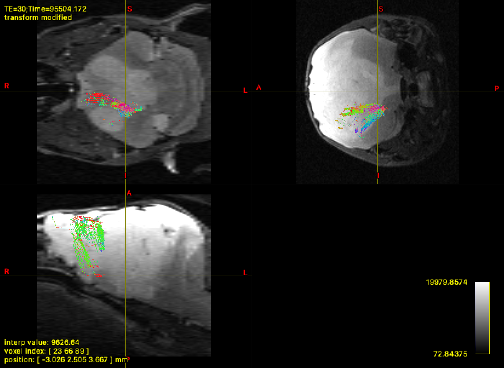
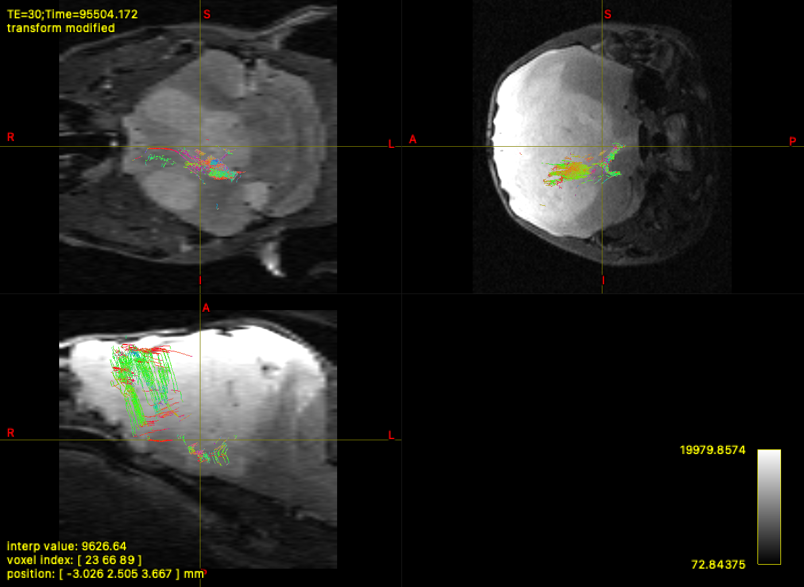
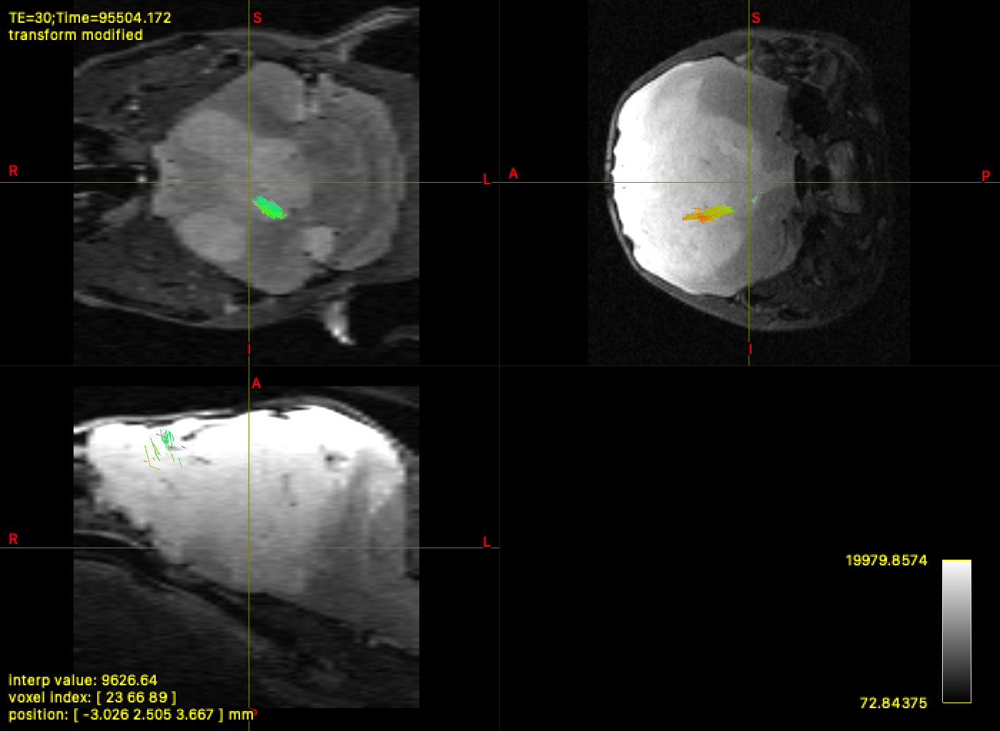
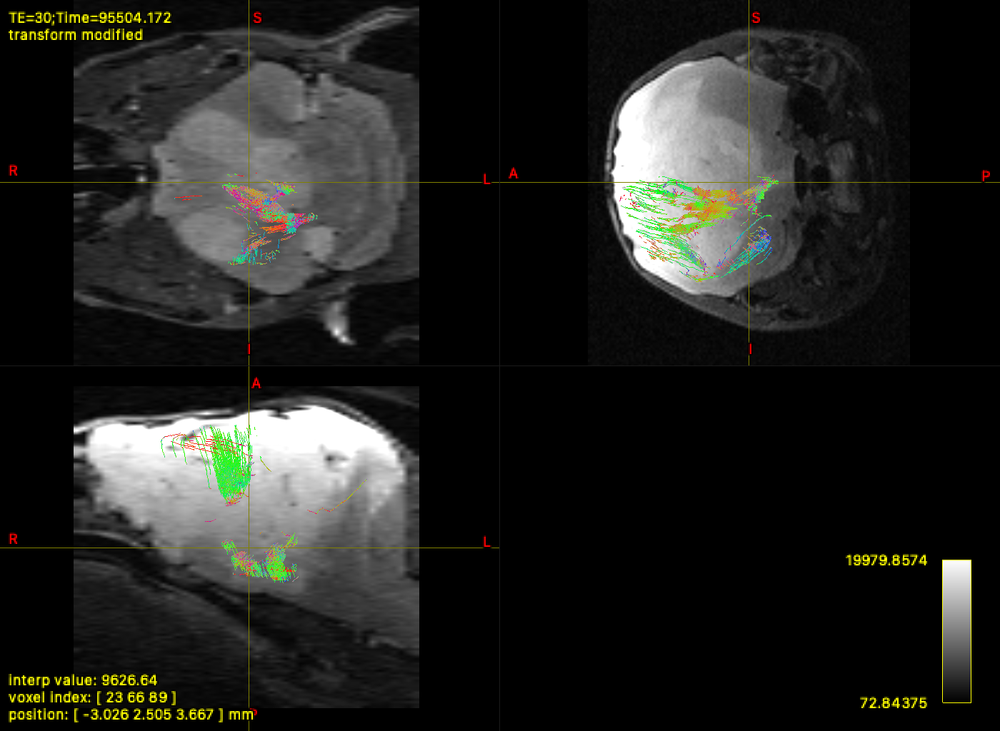
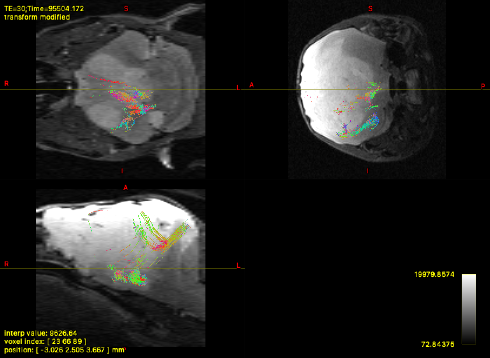

Tractography QC Report - 2026-02-07 07:01
tracks_seg6_graft_left_anterior_dorsal_to_Thalamus_left.tck

tracks_seg9_graft_left_anterior_dorsal_to_Striatum_left.tck
tracks_seg9_graft_left_anterior_dorsal_to_Striatum_left_cleaned.tck

tracks_seg9_graft_left_anterior_dorsal_to_Thalamus_left.tck

tracks_seg9_graft_left_anterior_dorsal_to_Thalamus_left_cleaned.tck

tracks_seg9_graft_left_central_dorsal_to_Thalamus_left.tck
tracks_seg9_graft_left_central_dorsal_to_Thalamus_left_cleaned.tck

tracks_seg9_graft_left_posterior_dorsal_to_Thalamus_left.tck
tracks_seg9_graft_left_posterior_dorsal_to_Thalamus_left_cleaned.tck